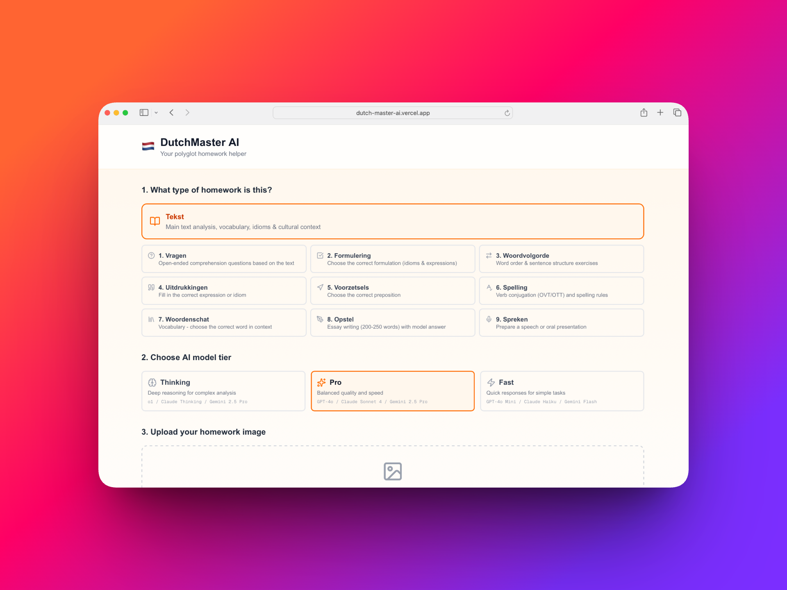
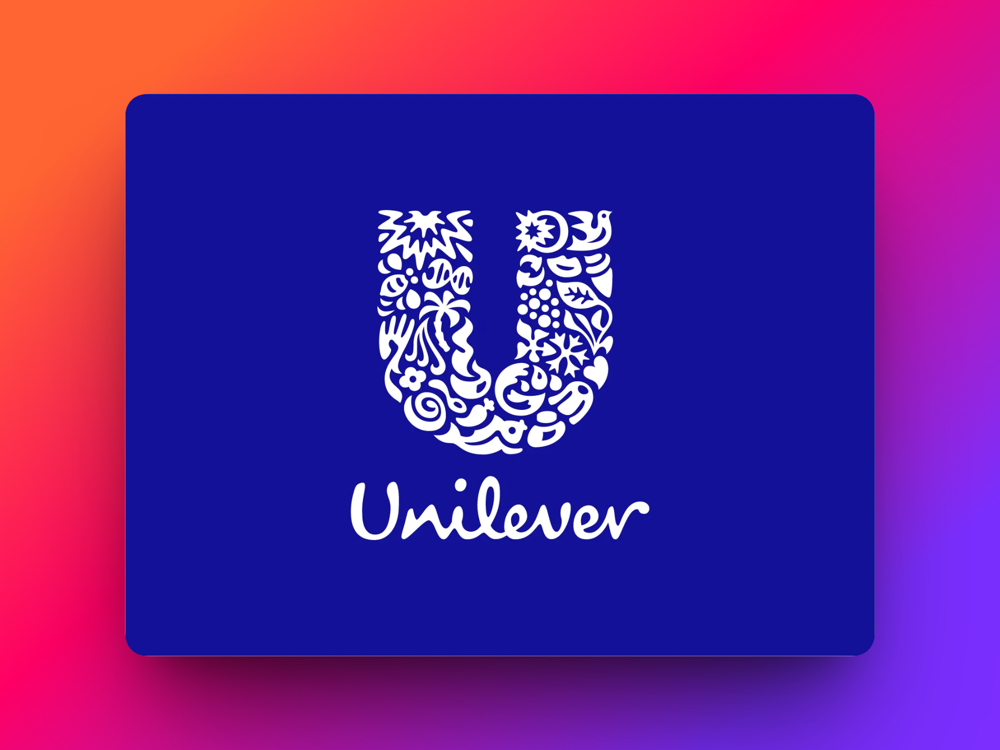
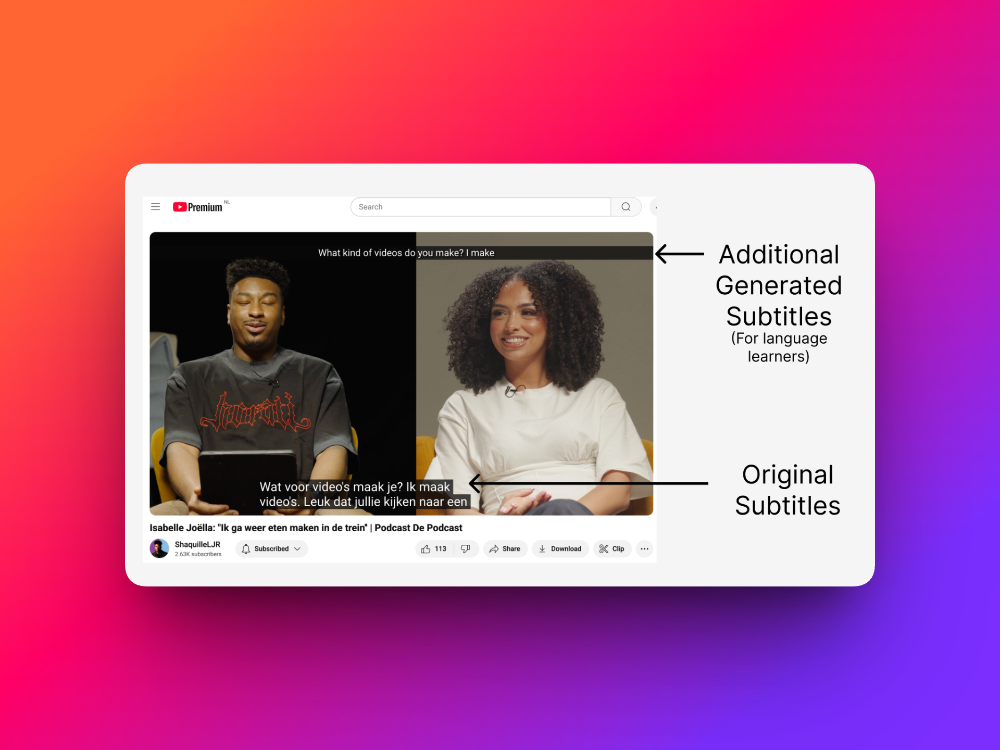
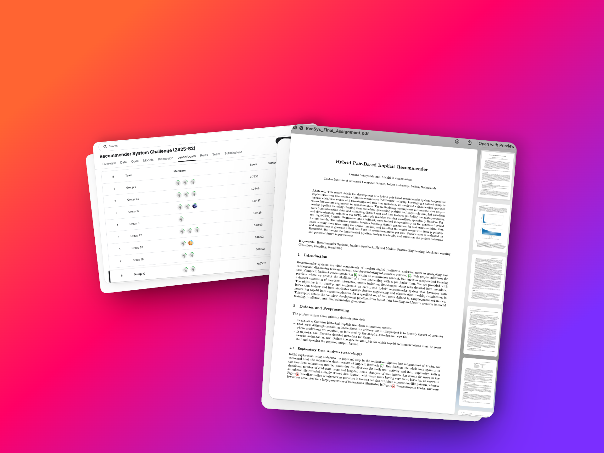

Software (AI) Engineer at ING
I build AI that turns documents into data.
I'm Bernard Adala Wanyande, a software engineer in ING Wholesale Banking, working on AI-powered extraction use cases. I like the part where models meet production: APIs, pipelines, and the cloud infrastructure around them.
01
About
I sit somewhere between software engineering and data science. After an MSc in Computer Science (Data Science) at Leiden University and a stint building Generative AI tools at Unilever, I now build production AI systems at ING.
Day to day that means Java and Python services, LLM-based agents, and the DevOps work that gets them safely into production on Google Cloud.
02
Experience
-
Sep 2026 – Present
CurrentSoftware (AI) Engineer · ING
Wholesale Banking
Building AI-powered document extraction use cases. I develop APIs and services with Spring Boot and FastAPI, build agents on Google's Agent Platform, and ship to Google Cloud Run through automated DevOps pipelines.
-
Nov 2025 – Sep 2026
Teaching Assistant, Quantum Computing · Q-Team
THUAS, TU Delft & Leiden University
Taught quantum computing fundamentals through lectures and lab sessions, contributed to curriculum development, and organised workshops across the university network.
-
Feb 2025 – Sep 2025
Data Scientist, Generative AI · Unilever
Automated shelf-life prediction, cutting manual analysis time by 60%. Built an AI learning assistant that turns SharePoint content into learning paths, and a RAG chatbot over proprietary company data.
03
Selected work

Enterprise RAG Knowledge System
2025MSc thesis with Unilever: retrieval-augmented generation over internal documents using hybrid search and LLMs.
Closed source

YouTube Dual Subtitles
2025Chrome extension that shows real-time translations above YouTube subtitles, built for language learners with the Gemini API.
